Làm theo đúng thứ tự này
Mỗi bước dùng kết quả của bước trước. Menu nằm ở cột bên trái phần mềm: mục Ca làm (bước 1–3) và mục Phân ca (bước 4–7).
- Ca làm việc
- Lịch trình vào ra
- Lịch trình ca làm việc (xoay ca)
- Gán ca cho nhân viên
- Gán ca cho phòng ban
- Lịch trình tạm thời
- Xem lịch trình (kiểu Excel)
- Thứ tự ưu tiên khi tìm ca
- Quy tắc chung: cuối tuần, hệ số, làm tròn
- Đổi xong — khi nào phải tính lại công
- Mẫu cấu hình theo loại công ty
- Câu hỏi thường gặp
Ca làm việc
Mỗi ca là một khung giờ làm. Bấm + Thêm ca, form chia 3 thẻ: Ca làm việc · Tăng ca · Nâng cao.
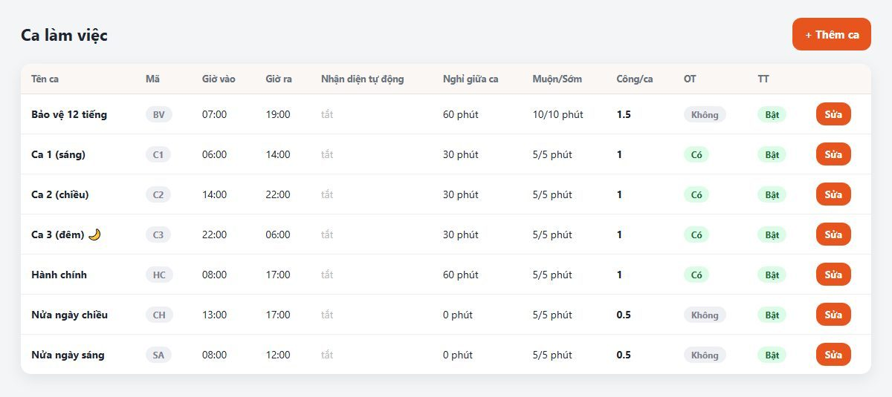
Thẻ "Ca làm việc"
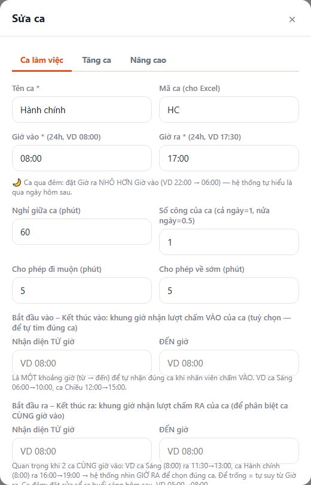
| Ô | Ý nghĩa |
|---|---|
| Mã ca | Chữ ngắn (HC, C1, C2, SA…) dùng để gõ trong bảng kiểu Excel. Nên đặt cho mọi ca. |
| Giờ vào / Giờ ra | Ca qua đêm: đặt giờ ra nhỏ hơn giờ vào (22:00 → 06:00), phần mềm tự hiểu ra ca là sáng hôm sau. |
| Nghỉ giữa ca | Số phút nghỉ trưa, bị trừ khỏi giờ làm khi nhân viên có mặt từ nửa ca trở lên. |
| Số công của ca | 1 = cả ngày, 0.5 = nửa ngày, 1.5 = ca 12 tiếng… Làm đủ ca được đúng số này. |
| Cho phép đi muộn / về sớm | Trễ/sớm trong mức này coi như đúng giờ. Vượt mức thì ghi đủ số phút (cho phép 5, trễ 12 → ghi trễ 12). |
| Bắt đầu / Kết thúc vào, ra | Không bắt buộc. Chỉ cần khi nhiều ca cùng giờ vào (VD ca sáng 8–12 và hành chính 8–17): đặt khung giờ RA để phần mềm phân biệt. |
Thẻ "Tăng ca"
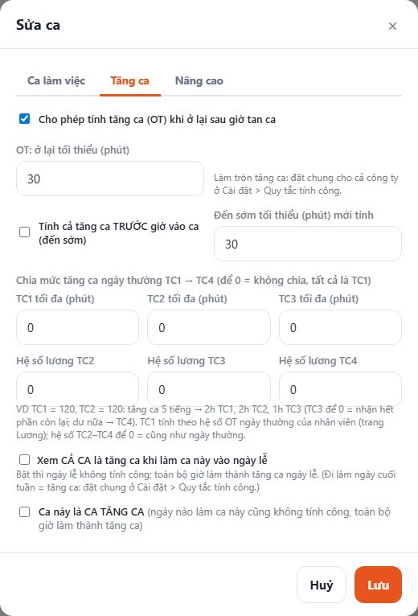
- Ở lại tối thiểu: ở lại sau giờ ra từ số phút này mới tính tăng ca, và tính cả thời gian ở lại. Đặt 30: ở lại 25 phút → không tính; ở lại 40 phút → 40 phút tăng ca.
- Tăng ca TRƯỚC giờ vào: tick nếu công ty trả tiền cho người đến sớm làm thêm.
- Chia TC1 → TC4: giới hạn số phút từng mức và hệ số lương riêng. VD TC1 = 120, TC2 = 120: tăng ca 5 tiếng → 2h TC1, 2h TC2, 1h TC3. Để 0 = không chia.
- Cả ca là tăng ca ngày lễ: đi làm ngày lễ thì không tính công, toàn bộ giờ thành tăng ca lễ.
- Ca này là ca tăng ca: ca làm thêm buổi tối, ngày nào làm cũng tính hết là tăng ca.
Thẻ "Nâng cao"
- Tính bù trừ: đi trễ thì ở lại bù, không bị trừ giờ. Phút ở lại để bù không tính tăng ca, vẫn ghi nhận số phút trễ.
- Thiếu giờ ra vẫn tính công: quên chấm ra vẫn được đủ công (trừ phần đi trễ). Không tick = ngày thiếu giờ ra được 0 công, chờ quản lý bổ sung.
- Chỉ tính phần vượt mức cho phép: cho phép 5, trễ 12 → ghi 7 phút (thay vì 12).
Lịch trình vào ra — lượt quẹt nào là VÀO, lượt nào là RA
Một người có thể quẹt nhiều lần trong ngày (ra ăn trưa, quẹt nhầm 2 lần…). Lịch trình vào ra quy định cách đọc các lượt đó. Khai một lần, chọn khi gán ca ở bước 4–5.
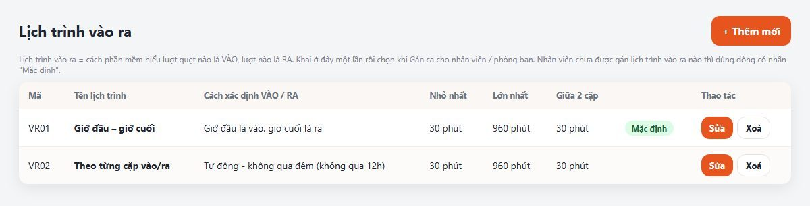
| Cách | Hoạt động | Dùng khi |
|---|---|---|
| Giờ đầu là vào, giờ cuối là ra | Lượt đầu tiên = VÀO, lượt cuối cùng = RA, bỏ qua các lượt ở giữa. Ca đêm lấy lượt vào buổi tối và lượt ra sáng hôm sau. | Hầu hết công ty. Nên chọn làm Mặc định. |
| Tự động – không qua đêm (theo cặp) | Lượt 1 = VÀO, lượt 2 = RA, lượt 3 = VÀO… Giờ làm = tổng các cặp, thời gian ra ngoài giữa chừng bị trừ. | Cần trừ giờ ra ngoài (ăn trưa tự do, ra ngoài việc riêng). |
| Tự động – qua đêm | Như trên nhưng cho ca đêm (cặp vào tối – ra sáng). | Ca đêm có ra ngoài giữa ca. |
| Theo ID máy | Máy số lẻ (1, 3, 5…) = VÀO, máy số chẵn (2, 4, 6…) = RA. Đặt "số máy" ở mục Máy chấm công. | Cổng vào và cổng ra đặt 2 máy riêng. |
| Chọn từ máy | Theo phím nhân viên bấm trên máy trước khi quẹt (Check In = VÀO, Check Out = RA). | Nhân viên quen bấm phím trạng thái. |
| Phân theo giờ | Lượt quẹt trong khung "Bắt đầu – Kết thúc vào" của ca là VÀO, trong khung "ra" là RA; lượt ngoài 2 khung bỏ qua. | Ca có khung giờ rõ, hay có lượt quẹt lẻ giữa ca. |
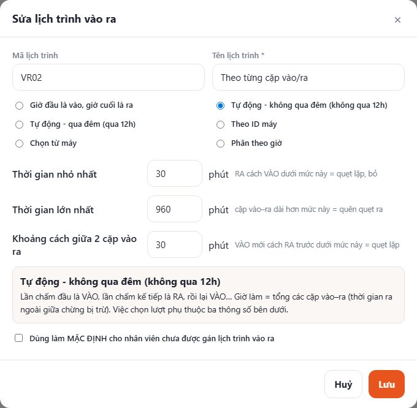
- Thời gian nhỏ nhất (30 phút): RA cách VÀO dưới mức này = quẹt lặp, bỏ.
- Thời gian lớn nhất (960 phút): một cặp dài hơn mức này = quên quẹt ra.
- Khoảng cách giữa 2 cặp (30 phút): VÀO mới cách RA trước dưới mức này = quẹt lặp.
- Ngoài ra, ở Cài đặt › Chống chấm trùng liên tiếp (mặc định 15 phút): cùng một người quẹt liền nhau trong 15 phút chỉ tính 1 lần.
Lịch trình ca làm việc — nhóm ca & xoay ca
Dùng khi một người không làm cố định 1 ca. Có 2 kiểu, chọn ở ô Đơn vị.
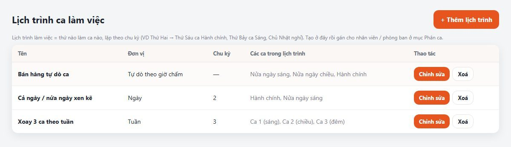
Chọn một nhóm ca (VD Sáng 8–12, Chiều 13–17, Hành chính 8–17). Mỗi ngày phần mềm nhìn giờ chấm và chọn đúng ca nhân viên đã làm: quẹt 8h–12h → ca Sáng; 13h–17h → ca Chiều; 8h–17h → Hành chính; quẹt 4 lần 8–12, 13–17 → tách thành 2 ca.
Hợp với: bán lẻ, F&B, nhân viên tự chọn ca.
Vẽ sẵn lịch: ô nào ca nào. Chu kỳ = số tuần (hoặc ngày, tháng) rồi lặp lại. VD xoay 3 ca theo tuần, chu kỳ 3: tuần 1 ca 1 → tuần 2 ca 2 → tuần 3 ca 3 → quay lại tuần 1.
Ô để trống = ngày nghỉ. Tuần 1 tính từ ngày bắt đầu khi gán.
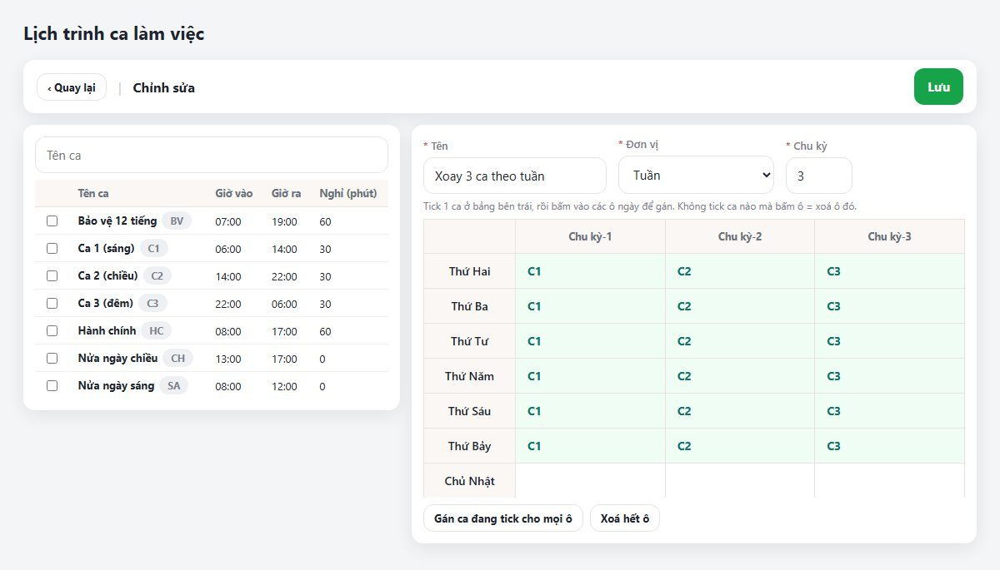
- Bấm "+ Thêm", đặt tênVD "Xoay 3 ca theo tuần".
- Chọn Đơn vị và Chu kỳTuần + 3 → bảng hiện 3 cột "Chu kỳ-1, 2, 3", mỗi cột 7 ngày.
- Tick 1 ca ở bảng trái, bấm vào ôTick C1 → bấm T2…T7 cột 1. Tick C2 → cột 2. Tick C3 → cột 3. Nút "Gán ca đang tick cho mọi ô" để điền nhanh.
- LưuRồi sang bước 4–5 để gán lịch này cho người / phòng ban.
Gán ca cho nhân viên
Gán 1 ca hoặc 1 lịch trình cho từng người, áp dụng từ ngày bắt đầu trở đi.
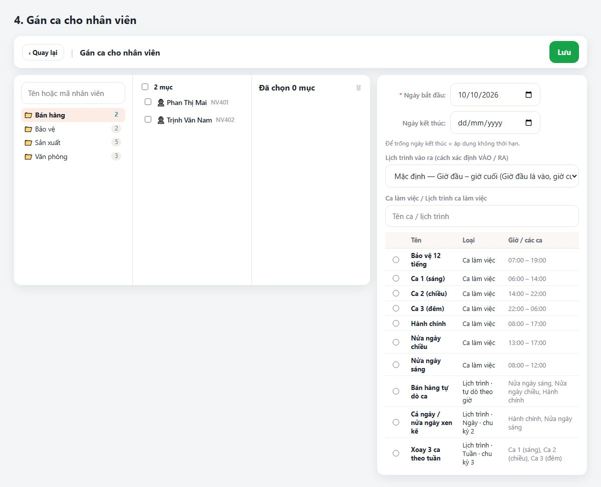
- Bấm "+ Thêm"Bấm tên phòng ban ở cột trái → tick người ở cột giữa (chọn được nhiều phòng, cộng dồn).
- Ngày bắt đầu, ngày kết thúcĐể trống ngày kết thúc = áp dụng không thời hạn.
- Lịch trình vào raĐể "Mặc định" nếu không có gì đặc biệt.
- Chọn 1 ca hoặc 1 lịch trình ở bảng phải → Lưu
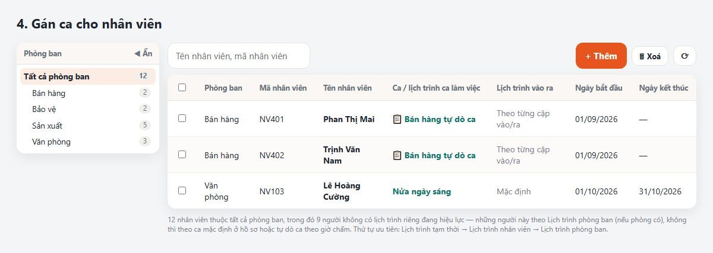
Gán ca cho phòng ban
Cách nhanh nhất cho công ty đông người: gán 1 lần cho cả phòng, người mới vào phòng sau này cũng tự theo.
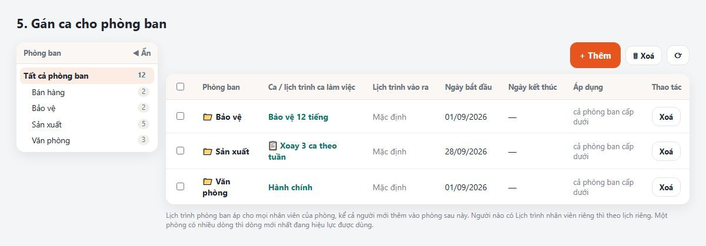
- Tick "Bao gồm cấp dưới" để áp cho cả các phòng con.
- Ai trong phòng có gán ca riêng (bước 4) thì theo gán riêng, không theo phòng.
- Đổi ca cả phòng từ một ngày: thêm dòng mới với ngày bắt đầu mới — dòng mới nhất đang hiệu lực được dùng, lịch sử cũ giữ nguyên để tính công các tháng trước.
Lịch trình tạm thời — đổi ca đột xuất vài ngày
VD tuần này 2 người tổ A chuyển sang ca đêm 3 ngày, hoặc cho cả phòng nghỉ bù. Hết các ngày đó tự quay về lịch đã gán.
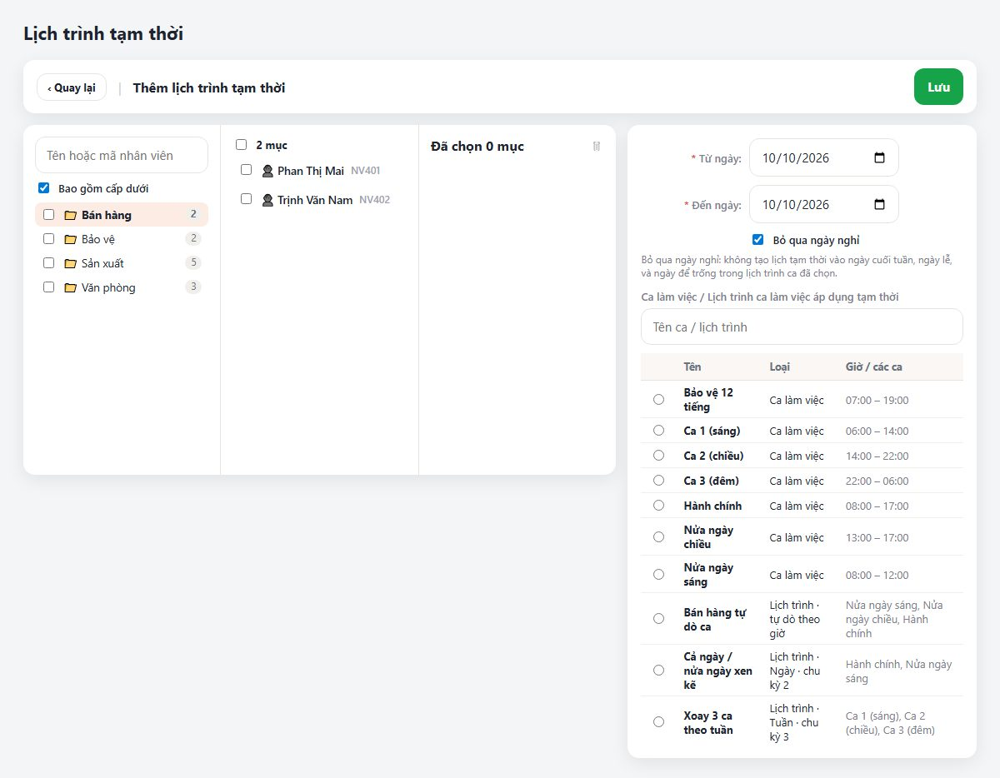
- Chọn ngườiTick ô cạnh tên phòng = cả phòng; bấm tên phòng rồi tick từng người.
- Từ ngày – Đến ngàyTick "Bỏ qua ngày nghỉ" để không đổi vào Chủ nhật, ngày lễ.
- Chọn ca, lịch trình hoặc "🛌 Nghỉ" → LưuCông các ngày đã chấm tự tính lại theo ca mới.
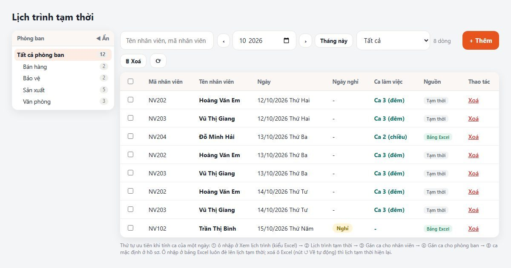
Xem lịch trình (kiểu Excel) — xem & sửa ca cả công ty
Mỗi dòng 1 nhân viên, mỗi cột 1 ngày. Ô nào cũng đã hiện sẵn ca phần mềm tìm được — chỉ cần sửa ô nào khác.
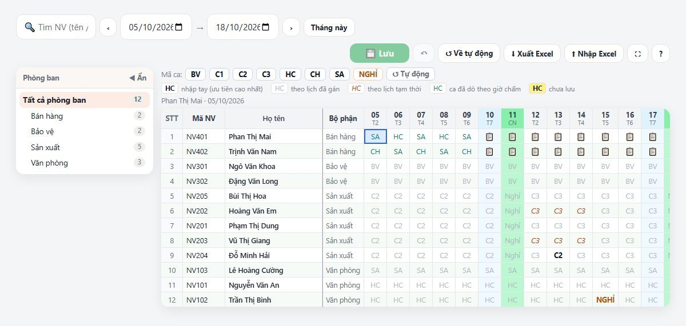
Thao tác như Excel
| Muốn | Làm |
|---|---|
| Đổi ca 1 ô | Bấm ô, gõ mã ca (HC, C1, SA…) rồi Enter. Hoặc bấm các nút mã ca phía trên. |
| Đổi nhiều ô một lúc | Kéo chuột (hoặc Shift + mũi tên) chọn vùng rồi gõ mã. Bấm số ngày = chọn cả cột, bấm số thứ tự = chọn cả dòng, Ctrl+A = cả bảng. |
| 2 ca trong 1 ngày (ca gãy) | Gõ nối bằng dấu cộng: SA+CH. |
| Cho nghỉ | Gõ N hoặc bấm nút NGHỈ. |
| Bấm nhầm, muốn trả về tự động | Chọn ô rồi bấm Delete hoặc nút ↺ Về tự động, rồi Lưu. Ô quay lại ca phần mềm tự tìm (hoặc lịch tạm thời nếu có). |
| Copy từ file Excel khác | Ctrl+C trong Excel → chọn ô → Ctrl+V. |
| Hoàn tác / Lưu | Ctrl+Z / Ctrl+S (hoặc nút 💾 Lưu (số ô)). |
| Xem khoảng ngày khác | Chọn Từ ngày → Đến ngày (tối đa 62 ngày, qua 2 tháng được). ‹ › chuyển cả tháng. |
| Tìm 1 người | Gõ tên hoặc mã ở ô 🔍 Tìm NV. |
| Bảng to hơn | Nút ⛶: ẩn menu trái, bảng chiếm cả màn hình. Esc để thoát. |
Phân ca cả công ty bằng file Excel
- Chọn "Tất cả phòng ban" và khoảng ngàyNên chọn khoảng nhỏ (1–2 tuần) cho file gọn, nhập nhanh.
- Bấm "⬇ Xuất Excel"File đã điền sẵn ca phần mềm tìm được (chữ xám nghiêng) và ô đã nhập tay (chữ đậm). Cột ngày ghi dạng 05/10.
- Sửa trong ExcelChỉ sửa ô cần đổi. Ô để nguyên = vẫn tự động. Gõ - = bỏ ô nhập tay. Sheet "Mã ca" có danh sách mã.
- Bấm "⬆ Nhập Excel"Phần mềm nhận theo Mã NV, báo số ô đổi / giữ tự động, và tự tính lại công các ngày đó.
Thứ tự ưu tiên khi tìm ca của 1 ngày
Một người có thể vừa thuộc phòng có ca, vừa có gán riêng, vừa bị đổi tạm. Phần mềm xét từ trên xuống, gặp cái nào trước thì dùng cái đó:
Quy tắc chung cho cả công ty
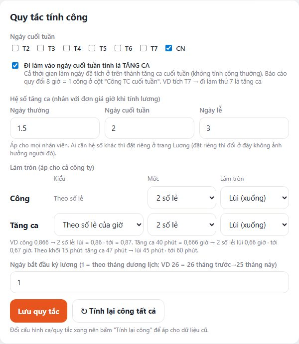
- Ngày cuối tuần: mặc định Chủ nhật. Tick thêm T7 nếu công ty nghỉ cả thứ 7. Ngày cuối tuần không bị tính là vắng.
- Đi làm ngày cuối tuần tính là TĂNG CA: cả thời gian làm thành tăng ca cuối tuần, không cộng vào công thường. Báo cáo quy đổi 8 giờ = 1 công ở cột "Công TC cuối tuần".
- Hệ số tăng ca: ngày thường / cuối tuần / lễ (mặc định 1,5 / 2 / 3). Ai cần khác thì đặt riêng ở trang Lương.
- Làm tròn công: số lẻ + lùi/tới. Mặc định 2 số lẻ, làm tròn lùi.
- Làm tròn tăng ca: theo số lẻ của giờ, hoặc theo khối phút (VD khối 15: 47 phút → lùi 45 · tới 60).
- Ngày lễ: khai ở khung "Ngày lễ" ngay bên dưới trong Cài đặt.
Đổi xong — khi nào phải bấm "Tính lại công"?
| Bạn vừa đổi | Công các ngày đã chấm |
|---|---|
| Ô ở bảng kiểu Excel, nhập file Excel, lịch trình tạm thời | ✅ Tự tính lại ngay |
| Ca làm việc (giờ, cho phép muộn…), lịch trình, gán ca nhân viên / phòng ban, quy tắc chung | Bấm ↻ Tính lại ở trang Tính công (chọn khoảng ngày) hoặc ↻ Tính lại công tất cả trong Cài đặt |
Mẫu cấu hình theo loại công ty
| Loại | Ca (bước 1) | Lịch trình (bước 3) | Gán (bước 4–5) |
|---|---|---|---|
| Văn phòng | HC 08:00–17:00, nghỉ 60', cho phép muộn 5' | Không cần | Gán HC cho từng phòng ban |
| Nhà máy 3 ca xoay tuần | C1 06–14, C2 14–22, C3 22–06 (qua đêm) | Đơn vị Tuần, chu kỳ 3: C1 → C2 → C3 | Gán lịch cho phòng Sản xuất; mỗi tổ một ngày bắt đầu khác nhau để lệch ca |
| Bảo vệ 12 tiếng | BV 07–19 (số công 1.5), BD 19–07 (qua đêm) | Đơn vị Ngày, chu kỳ 4: BV, BV, BD, BD (hoặc theo lịch riêng) | Gán cho phòng Bảo vệ |
| Bán lẻ / F&B ca linh hoạt | SA 08–12 (0.5 công), CH 13–17 (0.5), HC 08–17 | Đơn vị Tự động: SA, CH, HC | Gán lịch cho nhân viên; lịch vào ra "theo cặp" nếu nghỉ trưa không cố định |
| Part-time / theo giờ | — | — | Hồ sơ nhân viên: Kiểu chấm công = Theo giờ, chỉ tính tổng giờ |
Câu hỏi thường gặp
Ca đêm 22:00–06:00, giờ ra sáng hôm sau có bị tính sang ngày hôm sau không?
Không. Đặt giờ ra nhỏ hơn giờ vào là phần mềm hiểu ca qua đêm: lượt 06:00 sáng hôm sau là giờ RA của ngày hôm trước. Kể cả khi gán ca đêm sau khi đã chấm, các lượt vẫn ghép đúng.
Xếp ca chiều nhưng nhân viên đến từ 8 giờ sáng thì sao?
Với cách "Giờ đầu là vào, giờ cuối là ra", phần mềm lấy lượt đầu tiên trong ngày làm giờ vào: không bị tính trễ, không bị thiếu giờ ra. Muốn tính giờ đến sớm là tăng ca thì tick "Tăng ca TRƯỚC giờ vào" ở ca.
Ô hiện 📋 nghĩa là gì?
Người đó theo lịch "tự dò ca" và ngày đó chưa chấm, nên chưa biết làm ca nào. Chấm xong ô tự hiện đúng ca (chữ xanh).
Nhân viên làm 2 ca gãy (8–12 và 13–17) trong 1 ngày?
Cho vào lịch trình tự dò có cả 2 ca, hoặc gõ SA+CH ở bảng kiểu Excel. Phần mềm tách thành 2 dòng công, mỗi ca 0,5.
Tại sao công ra 0,94 mà không phải 0,95?
Do làm tròn lùi 2 số lẻ (mặc định). Muốn làm tròn tới: Cài đặt › Quy tắc tính công › Làm tròn › Công = "Tới (lên)", rồi bấm Tính lại công.
Lỡ nhập tay sai ở bảng Excel, làm sao trả về như cũ?
Chọn các ô đó → nút ↺ Về tự động (hoặc phím Delete) → Lưu. Ô quay về ca phần mềm tự tìm.
Đổi ca cả phòng từ tháng sau mà giữ đúng công tháng này?
Ở "Gán ca cho phòng ban" thêm dòng mới, ngày bắt đầu = ngày 1 tháng sau. Dòng cũ vẫn dùng cho các ngày trước đó.
Người mới vào phòng có phải gán ca không?
Không, nếu phòng đã được gán ca ở bước 5 — người mới tự theo ca của phòng.